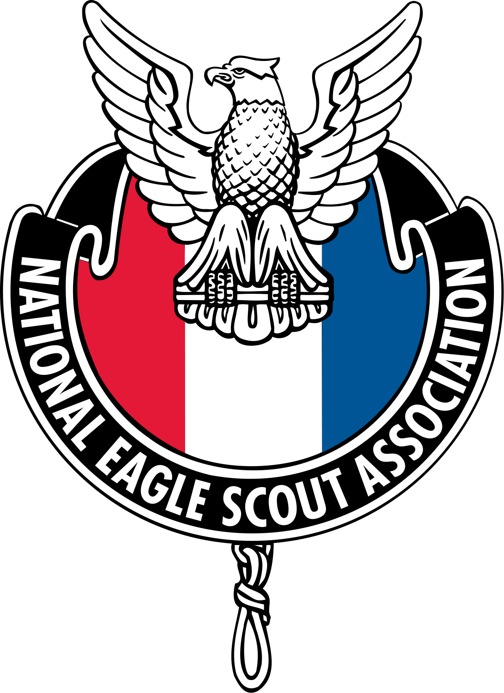

Education and Extracurricular

I earned a total of 28 merit badges during my tenure in Boy Scouts. I became an Eagle Scout of Boy Scout Troop 390 on June 19, 2015. I was tasked with a landscaping project for Grace Church Bath at their offices on Cleveland Massillon Road. The parking lot islands had old shrubs and dead plants that needed to be rid of. For my project I supervised and lead a team of 24 volunteers to replace the shrubs with gravel over a layer of blue tarp.
In my junior year in High School, I took an Engineering and Design class where I learned how to use Solidworks to draw models, create assemblies and print Engineering Drafts of those models. I was also part of a vocational program with the Four Cities Educational Compact. The program allowed me to take a Cisco A+ class at Barberton High School along with my other high school classes. During the first year, the class was split into two "courses": A Essentials (IT Essentials: PC Hardware and Software) and CCNA R&S: Introduction to Networks. I became a member of the National Technical Honors Society under the Compact on May 6, 2015. My instructor was Richard Mehok. With the help of him and his class, I eventually found my calling to Computer Science.
I took my first computer programming class in my Senior year, where I learned how to make Visual Basic programs. Afterwards, I took a brief Mobile Apps class that involved the use of an old Andriod emulator to run apps I developed using block-based coding. I graduated from the University of Akron with a Bachelors of Science in Computer Science.